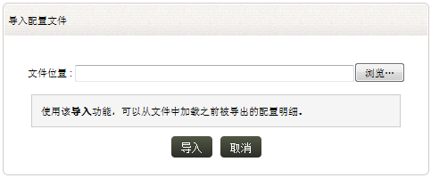

配置文件的导入和导出
EventLog Analyzer告警、过滤器和报表配置文件可以导出为XML文件格式，这个文件可以导入到其它的EventLog Analyzer安装中。每个配置文文件的导入和导出选项，可以在对应的标签下找到。
您可以使用以下菜单选项来导出配置文件：
- 告警页签 > 告警配置文件 >
告警配置文件明细 > 导出
- 设置页签 > 配置：数据库过滤器：所有过滤器 >
过滤器明细：导出
- 报表页签 > 报表：导出
- 设置页签 > 配置：导出/导入配置文件：导出：告警 | 过滤器 |
报表
您可以使用以下菜单选项导入配置文件：
- 告警页签 > 告警配置文件 >
告警配置文件明细 > 导入
- 设置页签 > 配置：数据库过滤器：所有过滤器 >
过滤器明细：导入
- 报表页签 > 报表：导入
- 设置页签 > 配置：导出/导入配置文件：导入配置文件
怎样导入配置文件？

-
输入配置文件（XML格式文件）的位置
-
或者使用浏览按钮找到并设置文件的位置
-
点击导入按钮完成配置文件的导入
|